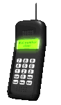

📚 ГАЙДЫ 2026★彡 КАК ОБОЙТИ БЛОКИРОВКИ — ПОШАГОВО 彡★
Актуальные на 2026 год инструкции по настройке VPN и прокси для обхода глушилок и белых списков в России 


ВЫБЕРИ СВОЙ ГАЙД
 📱 Hiddify — VLESS Reality Универсальный клиент: Android, iPhone, Windows, Mac. Лучший выбор 2026. Обход белых списков.
Самый простой способ — подключиться через нашего бота: он сам выдаст настройки и ссылку-подписку. Прокси для Telegram — бесплатно, VPN для всего интернета — от 239 ₽.

Какой клиент выбрать в 2026 годуДля обхода блокировок, глушилок и белых списков в России в 2026 году лучше всего работает протокол VLESS + Reality — он маскирует трафик под обычный визит на крупный сайт (Microsoft, Apple), поэтому системы DPI не могут его обнаружить. 📱 Телефон (Android)v2rayNG или Hiddify — оба бесплатные, поддерживают VLESS Reality. Hiddify проще для новичка. 🍏 iPhoneHiddify или Streisand/V2Box из App Store. Импортируете ссылку-подписку — и готово. 🖥 Компьютер (Windows/Mac)Hiddify (проще всего) или NekoBox/v2rayN для продвинутых. AmneziaWG 2.0 — если нужен полноценный системный VPN со стелс-обфускацией. 
|